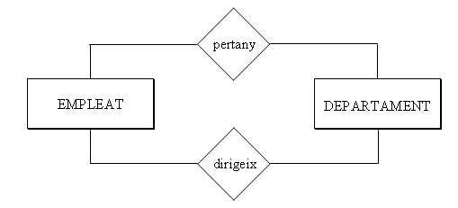

4. Les Relacions del Model E/R
Encara no hem relacionat les entitats entre elles, i per tant encara no hem dit que tal treballador pertany a tal departament (Joan Peris està en Comptabilitat, per exemple), o que tal treballador està en tal projecte dedicant-li tantes hores setmanals.
4.1 Relació
Encara no hem relacionat les entitats entre elles, i per tant encara no hem dit que tal treballador pertany a tal departament (Joan Peris està en Comptabilitat, per exemple), o que tal treballador està en tal projecte dedicant-li tantes hores setmanals.
RELACIÓ és una associació o correspondència entre entitats.
El TIPUS DE RELACIÓ serà l’estructura genèrica, l’associació entre dos tipus d’entitat, i englobarà les OCURRÈNCIES DE RELACIÓ , que relacionaran ocurrències de les entitats (Joan Peris pertany al departament de Comptabilitat, Pilar Gomis al de Vendes, ...).
Representarem la relació per un rombe, amb el nom de la relació a l’interior. Habitualment serà un verb que descriu la relació entre les dues entitats. Unirem el rombe amb els rectangles de les entitats per mig de línies.
Així tindrem:

En una Relació poden intervenir 2 entitats (Relació Binària), 3 entitats (ternària), o fins i tot més. Aquest número serà el GRAU de la relació.
Un exemple de relació ternària seria:

I una ocurrència d’aquesta relació podria ser: Comptabilitat compra una calculadora a Distribucions Garcia, S.L.
També es pot donar el cas que només intervinga una entitat. Aleshores seria reflexiva o de grau 1. Per exemple, els empleats tenen un supervisor, que també és un empleat de la companyia.
Per últim, també es pot donar el cas que dues entitats tinguen entre elles més d’una relació. En el nostre exemple els empleats pertanyen als departaments. Però alguns empleats dirigeixen els departaments, i aquesta és una relació distinta de l’anterior. Per això convé posar el nom de la relació, per evitar confusions.

Nota
Aplicació a l'exemple
Després d'incorporar les relacions, el nostre exemple quedarà:

4.2 Atributs de Relació
Les relacions també poden tenir atributs, igual que les entitats. Un atribut de relació seria el número d’hores que treballa un empleat en un projecte, que seria un atribut de la relació treballa. Per exemple Joan Peris treballa en el projecte Estudi rendiment , i li dedica 5 hores setmanals. Fixeu-vos que no és un atribut ni d’empleat ni de projecte, sinó de la relació que hi ha entre elles. Un altre atribut de relació podria ser la data quan un empleat comença a dirigir un departament.
Representarem els atributs de relació com els atributs d'entitat, però ara units a les relacions.
Aplicació a l'exemple
Posarem en roig els atributs de relació:

4.3 Tipus de Relació o Cardinalitat
Encara no hem reflectit tota la realitat. Per exemple no hem pogut expressar que un empleat pertany únicament a un departament, i en canvi pot estar en més d’un projecte.
Això ho farem per mig de la cardinalitat, que ens durà a distintes classes de relacions.
La CARDINALITAT especifica el número d'ocurrències d'una entitat que poden intervenir en la relació per cada ocurrència de l'altra entitat.
Una ocurrència d'EMPLEAT (un empleat concret) només pot estar relacionat amb una ocurrència de DEPARTAMENT (Joan Peris pertany a Comptabilitat, i a cap altre departament més). En canvi una ocurrència de DEPARTAMENT pot estar relacionada amb moltes ocurrències d'EMPLEAT (tots els que hi pertanyen). Aleshores la relació PERTANY entre DEPARTAMENT i EMPLEAT té raó de cardinalitat 1:N (un departament relacionat amb molts empleats, però un empleat amb un departament).
Ho representarem així:

o millor:

Els distints tipus de relacions que hi pot haver són:
-
1:1 (llegirem: ú a ú) com a màxim una ocurrència de cada. Per exemple la relació DIRIGEIX (un empleat dirigeix com a molt un departament, i un departament és dirigit per un empleat).
-
1:N (llegirem: ú a ena o ú a molts) en una entitat una ocurrència i en l'altra moltes.
-
M:N (llegirem: ema a ena o molts a molts) hi ha més d'una ocurrència en cada entitat. Per exemple la relació TREBALLA (un empleat pot treballar en més d'un projecte, i en un projecte pot treballar més d'un empleat).
Per a poder distingir aquesta cardinalitat ens farem dues preguntes, resultat de fixar una ocurrència en una entitat i veure quantes ocurrències es relacionen en l'altra entitat. És a dir, per a una ocurrència d'una, quantes hi ha de l'altra. En l'exemple de més amunt:
-
A un departament determinat, quants empleats poden pertànyer? (molts).
-
Un empleat determinat, a quants departaments pot pertànyer? (a un).
Aquestes preguntes normalment tenen molt fàcil contestació. Si hi ha dubte hauríem d'investigar millor en les especificacions.
Nota
La cardinalitat M:N també la podríem representar N:N. Senzillament vol dir que són moltes ocurrències de cada entitat per cadascuna de l'altra. En aquestos apunts normalment posaré M:N, senzillament perquè "sóna" millor.
Aplicació a l'exemple
L'exemple cada vegada està més complet:
Llicenciat sota la Llicència Creative Commons Reconeixement NoComercial CompartirIgual 3.0